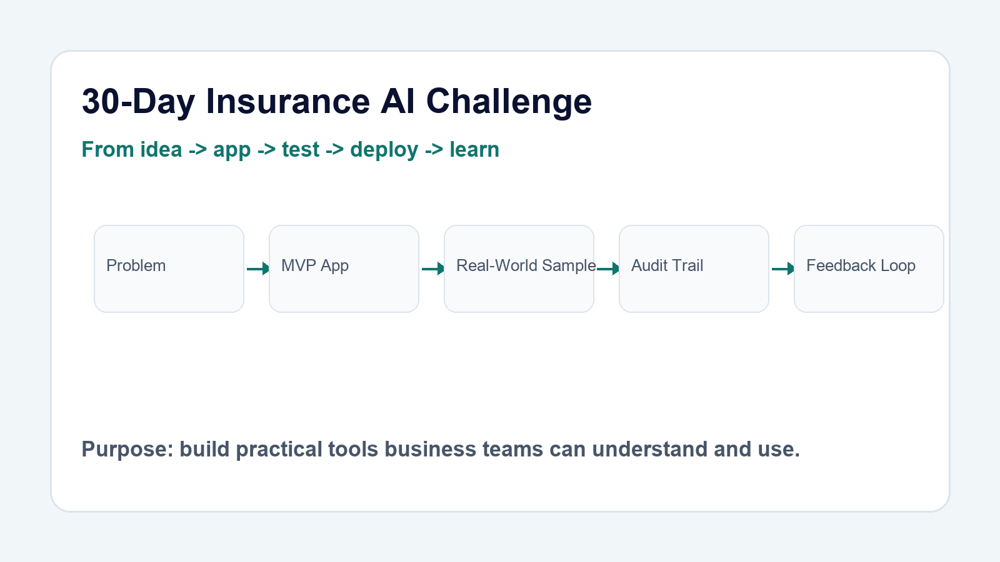
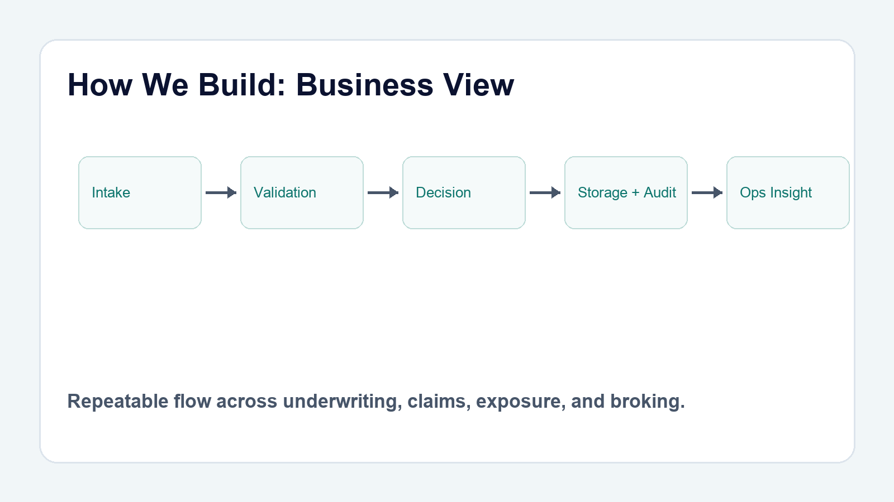

LinkedIn Content Pack - 30 Day Insurance AI Challenge
Total posts: 52. Includes architecture/business/nerdy posts, roadmap posts, Day 1-30 app posts, section start/wrap posts, and milestone retrospectives.



Disclaimer: Product names, logos, and trademarks are the property of their respective owners and are used for editorial/demo context.
Why I'm doing a 30-day insurance AI challenge
I'm building 30 insurance AI apps in 30 days, end to end.
Not concept slides. Production-style tools for underwriting, claims, and operations.
How we are building it: the architecture behind the insurance AI monorepo
Every app starts with the same backbone: a shared platform, not a pile of one-off demos.
The point is to make 30 apps feel like one system, with clear boundaries and reusable parts.
How we are building it (the complete nerdy version)
This is the nerdy version: schemas, services, logs, AI routing, and test harnesses all wired together.
If you care about maintainability, the data flow is the product.
What is coming next: grouped roadmap by insurance workflow
The next phase is not random app shipping. It's grouped by problem space and operating rhythm.
That way the series tells a coherent story instead of a scattered list of builds.
Day 0 plan: build once, scale 30 times
Day 0 is not for features.
It's for building the foundation that makes 29 future apps faster.
Improvements done until Day 3
By Day 3, the value was no longer just in shipping.
It was in tightening the workflow around every build.
Improvements done until Day 10
Ten days in, the stack had started to compound.
The apps were becoming more repeatable, more testable, and more useful.
Overall lessons learnt until Day 10 and efficiency gains
The biggest lesson so far is simple.
Speed comes from standards, not shortcuts.
Lloyd's/Specialty Underwriting - Section Start
Specialty underwriting wins before the quote is written.
The best teams make complexity look controlled.
Exposure Management - Section Start
Exposure management is where assumptions get tested.
If you cannot see it, you cannot control it.
Claims Ops - Section Start
Claims operations shape trust at the moment it matters most.
Speed matters. So does consistency.
Broking / Placement - Section Start
Placement is part market strategy, part execution discipline.
The right submission still needs the right market path.
Productivity & Automation - Section Start
Productivity gains come from removing friction, not adding dashboards.
Automation should free time for judgment work.
Leadership / Team Ops - Section Start
Team performance is built in the operating rhythm.
Leadership is mostly systems, not slogans.
General Insurance / Compliance - Section Start
Compliance is not a side constraint. It is part of the product.
Best controls reduce risk without slowing business.
Day 1: From broker submission to triage decision in minutes
Underwriters do not need more PDFs. They need a fast way to decide what deserves attention.
Day 1 turns messy broker submissions into a clear accept, refer, or decline recommendation.
Day 2: Portfolio concentration risk should be visible before it becomes a loss
Good portfolios fail quietly when concentration builds in the wrong place.
Day 2 makes mix, territory, and limit pressure visible before the next bind.
Day 3: Risk appetite documents should be machine-readable
Most appetite statements are written for humans, but triage needs structure.
Day 3 converts policy text into actionable underwriting rules.
Day 4: Lloyd's slips need a faster first read
A slip can hide the issue in plain sight if every clause is manual.
Day 4 surfaces key terms, unusual clauses, and coverage gaps in one pass.
Day 5: Free-text risk descriptions should map to a clear class
When class coding is wrong, everything downstream gets harder.
Day 5 maps unstructured risk text to class-of-business with confidence.
Day 6: Accumulation risk is easier to manage when you can see it
Spreadsheet totals do not reveal hotspots until they are crowded.
Day 6 turns location data into an accumulation heatmap with warnings.
Day 7: Cat event updates should become action, not noise
When an event breaks, teams need a briefing that says what changed and what to do.
Day 7 turns catastrophe bulletins into impact summaries and actions.
Day 8: Endorsement changes can hide material risk
A renewal can look familiar until one clause changes the story.
Day 8 compares expiring vs renewal wording to surface material differences fast.
Day 9: Referral queues need ranking, not just backlog
Not every referral deserves the same urgency.
Day 9 scores the queue so reviewers work highest-risk items first.
Day 10: FNOL triage should start with a decision, not an inbox
The first notice of loss is where speed matters most.
Day 10 classifies FNOLs into fast-track, manual-review, or escalate with factor-level reasoning.
Day 11: Binder capacity pressure should be visible before authority is breached
Binder drift is rarely one big event. It is small movements that compound quietly.
Day 11 monitors capacity utilisation and flags placement pressure before limits are crossed.
Day 12: Treaty layers are easier to govern when loss flow is explicit
Reinsurance wording is clear only when someone can explain who pays at each band.
Day 12 parses treaty terms and shows deterministic payer flow across loss levels.
Day 13: Schedule overlap should be flagged before accumulation surprises emerge
Two schedules can look independent while carrying the same risk concentration.
Day 13 detects cross-schedule clashes and prioritises them by severity.
Day 14: Leakage signals should be surfaced before reserve drift becomes expensive
Claims leakage usually starts with weak early signals, not a single obvious error.
Day 14 scores claims rows for leakage pressure and governance follow-up.
Day 15: Broker notes should become market-ready submission summaries in one pass
Placement speed improves when submission quality is consistent from the start.
Day 15 converts broker notes into structured market-ready summaries with referral cues.
Day 16: Scenario views should show baseline and stress in one decision frame
Portfolio stress discussions fail when baseline and stressed views are split across tools.
Day 16 models baseline versus stress outcomes from the same exposure dataset.
Day 17: Market reform contract checks should be machine-speed and audit-friendly
MRC compliance reviews are high-value judgement work buried under repetitive checks.
Day 17 validates required fields and clause signals with deterministic outputs.
Day 18: Placement progress should be visible as a governed operating board
Placement teams need one source of truth, not status updates scattered across channels.
Day 18 tracks market responses, bind pressure, and next actions in a deterministic flow.
Day 19: Wording risk needs a severity-led diff, not a redline wall of text
Teams do not need every wording change. They need materiality-first decisions.
Day 19 scores wording deltas by risk severity and highlights actionable differences.
Day 20: Regulatory updates should become ranked actions, not unread bulletins
Regulatory volume is high, but decisions still need to be made by deadline.
Day 20 converts multi-source updates into a relevance-ranked action digest.
Day 21: Meeting preparation should produce decision-ready briefings in one pass
Senior meetings lose value when teams debate facts instead of decisions.
Day 21 builds a structured briefing pack with risks, asks, and recommended posture.
Day 22: Renewals should start with portfolio intelligence, not static templates
Renewal strategy should reflect current risk movement, not last year’s narrative.
Day 22 assembles renewal insight, pricing posture, and broker conversation cues.
Day 23: Operational health should be monitored as risk, not vanity metrics
Ops metrics matter only when they trigger clear intervention.
Day 23 turns service telemetry into a risk-rated operations action plan.
Day 24: Data quality should fail fast before records enter critical workflows
Bad bordereaux data should be blocked early, not discovered downstream.
Day 24 validates schema and row quality with severity-led remediation guidance.
Day 25: Sanctions checks should be repeatable, explainable, and schedule-driven
Screening quality drops when list updates and checks are disconnected.
Day 25 screens entities deterministically and captures clear block/review outcomes.
Day 26: QBR packs should read like decisions, not disconnected metric dumps
Quarterly reviews need a coherent narrative, not a spreadsheet recital.
Day 26 converts metrics and context into board-ready QBR narrative outputs.
Day 27: Capacity planning should combine workload, skills, and risk priority
Backlog management fails when capacity is treated as a single number.
Day 27 plans team allocation using demand pressure and reviewer capability signals.
Day 28: Stakeholder updates should be drafted from facts, not from memory
Comms quality drops when update drafting starts from a blank page every time.
Day 28 drafts audience-specific updates from structured status and action context.
Day 29: AI readiness should be scored with blockers and enablers in plain sight
Readiness discussions stall when maturity is subjective and unstructured.
Day 29 scores readiness, surfaces blockers, and proposes a practical execution roadmap.
Day 30: Reserving decisions need deterministic triangles, not spreadsheet drift
IBNR confidence should come from transparent maths, not fragile workbook chains.
Day 30 delivers a deterministic chain-ladder capstone with auditable ultimate and reserve outputs.
Lloyd's/Specialty Underwriting - Section Wrap
Strong specialty underwriting is built on repeatable judgment.
That only works when process supports people.
Exposure Management - Section Wrap
Exposure management turns uncertainty into action.
Goal is not perfect data. Goal is better decisions.
Claims Ops - Section Wrap
Claims operations are where process meets promise.
If the model is weak, customers feel it immediately.
Broking / Placement - Section Wrap
Placement is won in details before market sees the risk.
Better preparation improves both speed and outcomes.
Productivity & Automation - Section Wrap
Automation should create capacity, not convenience.
Right systems make good habits easier to keep.
Leadership / Team Ops - Section Wrap
Leadership is visible in team behaviour when no one is watching.
Consistency beats intensity over the long run.
General Insurance / Compliance - Section Wrap
Compliance works best when built into work.
Rules alone do not reduce risk. Good design does.